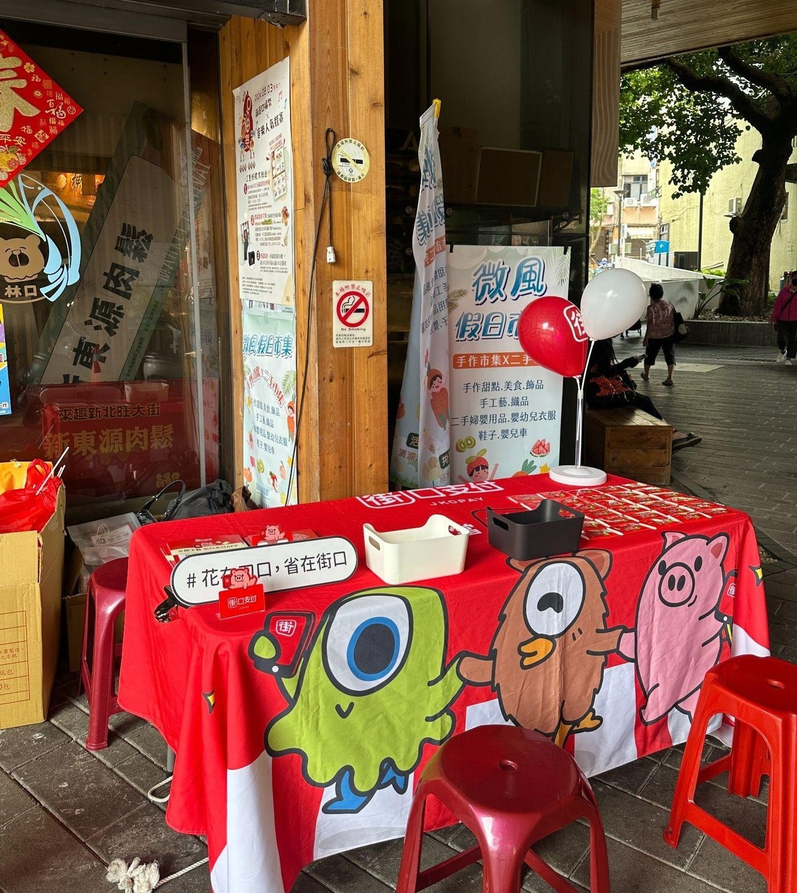
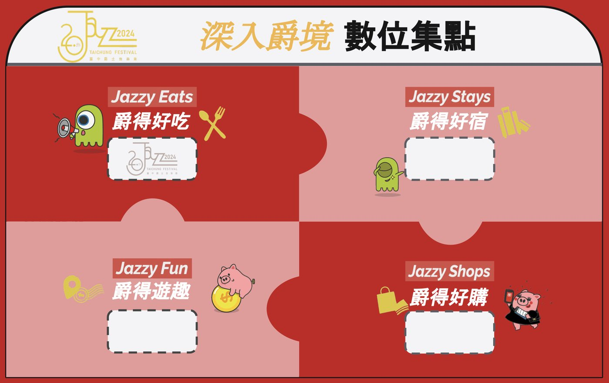

Traditional Markets
Linkou · Taishan29 merchant wins in two pilots
Most stalls in Taiwan’s traditional markets still take only cash. We picked two pilot markets with data and field visits, then pitched stall by stall and ran pop-up booths to sign up shoppers.
Data, field visits, then a screen
District data narrowed the search, two market visits showed what “ready” looks like, and a simple screen found the pilots.
- Pull three signalsTransactions, active users and merchants for every district
- Put them on one scaleStandardized, so big and small districts compare fairly
- Pick the middleAn existing JKOpay base, but penetration still low
- Fixed, indoor stalls
- E-pay coverage of 30–40%+
- An active market association
Government market ratings already score e-pay.
One QR code, four segments, two market goals
Stalls segmented by the wallets they accept; each pilot market went after the segments it needed most.
The pitch: one contract, one QR code, 10 wallets accepted, plus on-site setup support.
The bottleneck was the download
Shopper funnel at the market pop-up booths: approached → downloaded → verified.
Step conversion shown after each count.

Taishan is older (aging index 110.7 vs. 67.7). Women aged 45–60 made up 76% of downloads.
Pick younger markets first · weekly “market grocery day” promo · merchant and user referral rewards
Donation Growth
JKOpay vs. LINE PayGoing after the gaps LINE Pay filled
JKOpay lets users donate to nonprofits in its app, but its donation zone raised far less than LINE Pay’s. I found the kinds of nonprofits JKOpay was missing and reached out to them.
Where the portfolio falls short
Categories may overlap.
53% vs. 40% of partners: JKOpay already leads
40% vs. 57%: recruit more to match LINE Pay
8% vs. 17%: recruit more to match LINE Pay
About 4 in 10 donors aged 20–39 (JKOpay’s core users) care, but JKOpay lists only 13 groups
Donor-interest figure: Business Next (數位時代) giving study.
Jazz Festival
Proposal- Picked from 4 candidate city events
- Visitors overlap with wallet users
- Dense shopping streets around the venue
- Ask: festival partners + 50+ JKOpay merchants

Every stamp sends traffic to a different partner merchant.
Coin rewards capped at 500 people per tier. Concept only: not launched or validated.
What I brought
My role: turn JKOpay’s data into a target list, then win over merchants and partners in person.
Let data narrow the target, then test it in the real world before scaling.